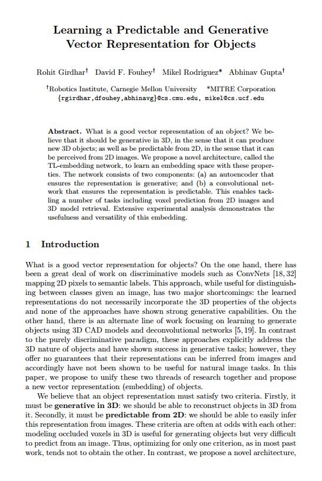

Learning a Predictable and Generative Vector Representation for Objects

|
| What is a good vector representation of an object? We believe that it should be generative in 3D, in the sense that it can produce new 3D objects; as well as be predictable from 2D, in the sense that it can be perceived from 2D images. We propose a novel architecture, called the TL-embedding network, to learn an embedding space with these properties. The network consists of two components: (a) an autoencoder that ensures the representation is generative; and (b) a convolutional network that ensures the representation is predictable. This enables tackling a number of tasks including voxel prediction from 2D images and 3D model retrieval. Extensive experimental analysis demonstrates the usefulness and versatility of this embedding. |
People
Paper
|  |
R. Girdhar, D. F. Fouhey, M. Rodriguez and A. Gupta Learning a Predictable and Generative Vector Representation for Objects Proc. of European Conference on Computer Vision, 2016 [PDF] [code] [models] [Supplementary Material] |
Acknowledgements
This work was partially supported by Siebel Scholarship to RG, NDSEG Fellowship to DF and Bosch Young Faculty Fellowship to AG. This material is based on research partially sponsored by ONR MURI N000141010934, ONR MURI N000141612007, NSF1320083 and a gift from Google. The authors would like to thank Yahoo! and Nvidia for the compute cluster and GPU donations respectively. The authors would also like to thank Martial Hebert and Xiaolong Wang for many helpful discussions